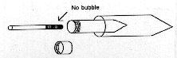

CHAPTER 7 - GENETIC METHODS
(Source: C. Walker and G. Streisinger)
Sperm may be frozen and thawed later for in vitro fertilization. This method is well suited for "backing up" genetic stocks against accidental loss or for reducing the number of tanks used to house different lines.
To Freeze sperm:
1. Anesthetize and prepare the male as described in
the section on Embryo
Production By In Vitro Fertilization.
2. Collect sperm in a labeled micro glass capillary, being careful to exclude bubbles (i.e. use very little suction).
3. Mix sperm thoroughly with a 5x volume of sperm freezing medium (see below or RECIPES, Chapter 10) being careful to avoid air bubbles.
- A simple way to do this is to mark the capillary at the end of the sperm droplet and measure the amount of sperm in mm.
- Make a second mark on the capillary at 6x mm.
- Draw freezing medium into the capillary with the sperm up to the second mark.
- Carefully expel most of the sperm mixture onto a clean watch glass and draw in and out 2 times to mix sperm and freezing medium. Work quickly, being careful not to introduce bubbles.
4. Draw the mixture into the capillary, transfer the capillary into a 7 ml screw cap tube, cap the tube, and put it into a 15 ml plastic conical centrifuge tube. Quickly plunge the whole works into crushed dry ice for 20 minutes. This configuration provides the proper freezing rate.

Figure 4. Container for freezing sperm
5. After 20 minutes, remove the capillary from the screw cap tube and immerse in liquid nitrogen.
6. The capillary can be stored for years open ended in a test tube on a wand in a liquid nitrogen freezer.
NOTE: avoid condensation as much as possible keep everything dry work fast
Sperm freezing recipes:
Ginzburg Fish Ringers
- 6.5 g NaCl
- 0.25 g KCl
- 0.3 g CaCl2 (0.4 g CaCl2⋅2H2O)
- Add ddH2O to almost 1 liter
- 0.2 g NaH CO3
- Add ddH2O to 1 liter
Note: The order of addition is important to prevent precipitation
Freezing Medium
- 9 ml Ginzburg Fish Ringers
- 1 ml Methanol
- 1.5 g Carnation Powdered Skim Milk
Note: This order is important to prevent precipitation of milk
The Zebrafish Book